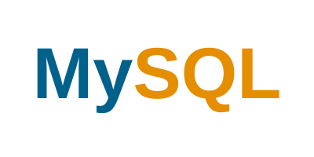
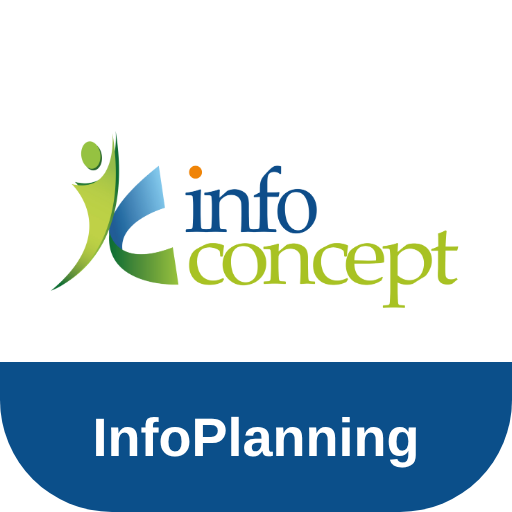
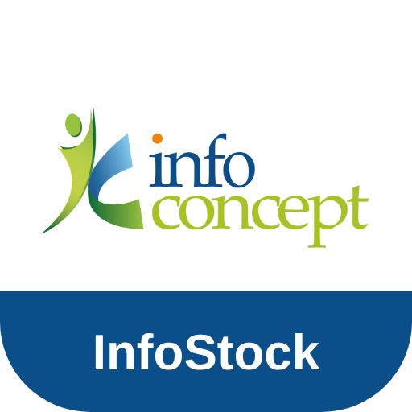

Selim Mermer
Portfolio BTS SIO SISR
Administration systèmes & réseaux • Virtualisation • Support aux utilisateurs • Projets en entreprise
À propos de moi
Je m'appelle Selim Mermer, j'ai 20 ans et je suis étudiant en BTS SIO option SISR (Solutions d'Infrastructure, Systèmes et Réseaux) à Schola Nova, en alternance chez InfoConcept.
C'est ma curiosité pour le monde du réseau qui m'a orienté vers le SISR.
Mon objectif est clair : obtenir mon BTS, puis poursuivre mes études pour devenir administrateur systèmes et réseaux. Ce portfolio est le reflet de mon parcours et de mes missions en entreprise, de mes projets en formation et de mes projets personnels.
Mon rôle chez InfoConcept
Apprenti Informatique – BTS SIO SISR
En tant qu'apprenti, je suis pleinement intégré au service technique. Mes missions incluent le support aux utilisateurs, l'installation de postes de travail et de caisses, la configuration réseau et la mise en place de solutions de déploiement.
Cette expérience m'a permis de développer des compétences humaines essentielles : le contact client, la pédagogie lors des formations, le travail en équipe et une grande autonomie dans la gestion de mes tâches.
Mon entreprise – InfoConcept
InfoConcept, fondée en 2009 et située au Mesnil-Amelot, est une société de services informatiques dédiée à l'accompagnement des PME, commerces, restaurants et grossistes. Avec un chiffre d'affaires de près d'un million d'euros en 2023, elle s'est imposée comme un acteur solide de son secteur.
L'entreprise est spécialisée dans la distribution et l'intégration de solutions de gestion commerciale, notamment en tant que partenaire officiel du logiciel AKEAD depuis 2014. Son offre couvre également la fourniture de matériel informatique (caisses, PC, réseau), de systèmes de vidéosurveillance Dahua et de consommables.
Organigramme InfoConcept
- Président Directeur Général
Faruk MERMER
- Assistante du PDG
Emel SESLI
- Technicien Supérieur
Cengiz KACAN
- Pôle Technique
- Technicien Itinérant
Huseyin BEYAZ
- Technicien Caméra
Chetananand M.
- Technicien (CDI)
Önder OZ
- Pôle Apprentissage
- Apprenti Informatique
Selim MERMER
- Apprenti Informatique
Kevin ATES
- Apprenti Informatique
Nissa KARADAG
- Apprenti Informatique
Sözdar AKTAS
Mon parcours
J'ai obtenu mon baccalauréat général (spécialités Mathématiques et Sciences Économiques et Sociales) en 2025.
J'ai ensuite rejoint Schola Nova en septembre 2025 pour préparer le BTS SIO option SISR en alternance chez InfoConcept.

Missions

Installation de MySQL 5.1 (64 bits)
Projet en entreprise – InfoConcept
Installation et configuration d'un serveur MySQL sur un poste Windows, nécessaire au fonctionnement du logiciel de gestion AKEAD : installation personnalisée, paramétrage réseau (port 3306, règle de pare-feu), puis création des utilisateurs et attribution de leurs privilèges avec MySQL Administrator.
Déploiement d'images Windows via Acronis
Projet en entreprise – InfoConcept
Création et déploiement d'images système standardisées avec Acronis pour préparer les futurs postes et caisses, garantissant une configuration homogène et un gain de temps majeur.

Transfert de données AKEAD et MySQL
Projet en entreprise – InfoConcept
Mise en place et configuration de bases de données MySQL pour les logiciels de gestion. Utilisation de MySQL Administrator pour la gestion des utilisateurs et des permissions de base.
Projets personnels
Application interne « InfoConcept » : deux modules, InfoPlanning et InfoStock, conçus de ma propre initiative pour répondre à un besoin de l'entreprise.

InfoPlanning
Projet personnel – en dehors de l'entreprise
Module de planification des interventions des techniciens d'InfoConcept : client, adresse, horaire et statut (à faire, en cours, terminé). Chaque technicien se connecte et ne voit que ses missions, depuis son téléphone.

InfoStock
Projet personnel – en dehors de l'entreprise
Module de gestion du matériel : quantités, emplacements, seuils d'alerte, fournisseurs, demandes d'achat et inventaire. Le matériel déclaré à la fin d'une intervention est retiré du stock automatiquement.
Dossier Examens
Documents officiels de l'épreuve E5 – BTS SIO SISR 2027
Tableau de Synthèse E5
Document officiel récapitulant l'ensemble des situations professionnelles et compétences acquises – BTS SIO 2027.
TéléchargerContact & informations
Me contacter
Vous êtes membre du jury, recruteur ou simplement curieux de mon profil ? N'hésitez pas à me contacter pour toute question, opportunité d'alternance ou d'emploi.
- selimmermer.pro@gmail.com
- 06 68 22 76 36
- Mon profil LinkedIn